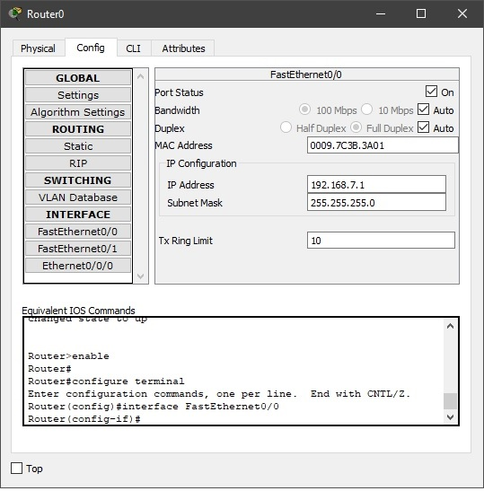

Лабораторная работа №3 "Настройка локальной сети передачи данных".
Описание: Проектирование и разработка индивидуального или коллективного веб-приложения с использованием html,css,js + json,xml.
Настройка коммутаторов и маршрутизаторов.
Цель данной работы: Ознакомиться с принципами работы компьютерных сетей, базовой настройкой сетевого оборудования и статической маршрутизацией.
Для выполнения лабораторной работы нам понадобится программа "Cisco Packet Tracer".В ходе лабораторной работы нужно:
- Построить сеть, указанную в задании.
- Указать настройки маршрутизаторов по варианту.
- Проверить работоспособность сети
Для начала построим сеть:

Рис.1 Строение сети
Затем требуется подсоединить модуль для соединения с другими роутерами:
Прописываем в настройка роутера интерфейсы и статические адреса сетей (можно через консоль или интерфейс):

Рис.3 Настройка роутера

Рис.4 Прохождение пакетов
Нажмите здесь, чтобы редактировать содержимое страницы.
Click here to toggle editing of individual sections of the page (if possible). Watch headings for an "edit" link when available.
Добавить содержимое, не редактируя страницу целиком.
История изменений этой страницы.
Самый легкий способ обсудить содержимое этой страницы.
Просмотр и управление вложенными файлами для этой страницы.
Полезные инструменты для управления этим сайтом.
Просмотреть, какие страницы ссылаются и включают в себя эту страницу.
Изменить имя (а также адрес, возможно, и категорию) страницы
Смотреть вики-код этой страницы без редактирования.
Посмотреть/установить родительскую страницу (используется для создания "дерева навигации")
Уведомить администраторов о сомнительном содержании страницы
Что-то не работает так, как должно? Узнайте, что Вы можете сделать.
Базовая документация и помощь Wikidot.com.
Условия использования Wikidot.com - что вы можете, чего не можете, и прочее.
Политика конфиденциальности Wikidot.com